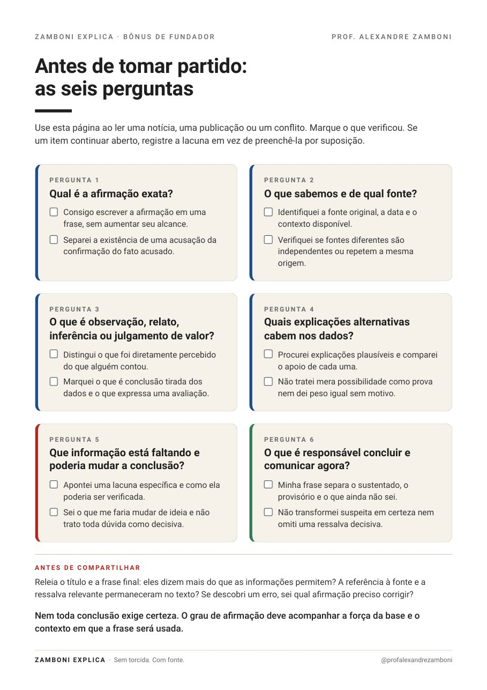

Toda semana, no seu WhatsApp, o caso jurídico que todo mundo está discutindo: o que aconteceu, o que a lei diz e o que pode acontecer agora. Em linguagem que você entende e consegue repetir.
Quero ser assinante fundador — R$ 9,90/mês →Pré-venda de 1º a 7 de dezembro. Primeira edição no domingo, 13 de dezembro, às 8h.
O Brasil discute direito o tempo todo: no almoço de domingo, no grupo da família, no trabalho, nos comentários. Quase sempre com torcida. Cada lado já chega com a conclusão pronta e procura na lei só o que confirma o que já pensava.
Eu sou professor de Direito Penal há mais de dez anos. Nas minhas redes, aprendi uma coisa: quando alguém explica um caso pelo que a lei diz, e não pelo lado de quem ganha, as pessoas param para ouvir. Inclusive quem discorda.
O Zamboni Explica existe para isso: um lugar fixo, toda semana, onde o caso do momento é analisado com critério, e não com camisa de time.
Alexandre ZamboniProfessor de Direito Penal e Processo Penal
Não é falta de inteligência. É falta de alguém que separe, com calma, o que é fato, o que é acusação, o que é prova e o que é opinião.
Cada caso passa pelas mesmas seis perguntas, sempre na mesma ordem. Toque em cada uma para ver como ela funcionou no caso da janela do hotel, em São Luís.
Nas redes, o caso virou duas frases prontas: “o hotel matou a hóspede” e “ela sentou na janela, a culpa é dela”. A pergunta que interessa é mais precisa: se uma hóspede se senta no batente e uma peça da estrutura cede, o hotel responde, mesmo com o risco que ela assumiu?
Três frases para você explicar o caso a qualquer pessoa.
O resumo pronto para mandar no grupo da família.
Uma pergunta para você conferir, de cabeça, se o caso ficou claro.
Os conceitos de todo noticiário: foro privilegiado, quem julga o quê, prisão preventiva, decisão monocrática, crime ou multa.
Uma vez por mês, respostas por escrito às perguntas mais votadas.
O checklist “Antes de tomar partido”, com as seis perguntas numa página.
“Se você abriu as redes nesta semana, provavelmente viu o caso resumido em duas frases prontas. Agora, repare numa coisa: nenhuma das duas responde à pergunta que de fato importa.”
Na edição, eu passo o caso pelas seis perguntas com você: o que as câmeras mostram e o que é suposição, o que a lei do consumidor pergunta de fato e o que ainda falta o laudo dizer.
O card que acompanha cada edição, pronto para o grupo da família.
Pagamento pela Kiwify, por cartão ou Pix.
O acesso chega no seu e-mail, junto com a sua área de assinante.
No seu celular e no seu e-mail. A tempo do almoço de família.
A comunidade é só de leitura: sem conversa paralela, sem enxurrada de mensagens e sem notificação a toda hora. Uma edição por semana, mais o conteúdo extra do mês.
A pré-venda fecha na segunda-feira, 7 de dezembro, às 23h59 (horário de Brasília). Depois disso, as assinaturas fecham. Quando reabrirem, será sem o preço de fundador.

Bônus de fundador: as seis perguntas numa página, para usar em qualquer notícia.
Se, em até 7 dias da compra, você achar que não é para você, peça o reembolso e devolvemos 100% do valor. Sem perguntas. O pedido é feito direto pela Kiwify, a plataforma de pagamento, em poucos cliques.
Mestre em Direito Criminal, professor de Direito Penal e Processo Penal há mais de uma década e fundador do Centro de Ensino Zamboni.
Nas redes, explica os casos que o Brasil está discutindo para mais de 500 mil pessoas, com uma regra: o que a lei diz, sem torcida.
Não. O Zamboni Explica foi feito para quem não é da área. Quando um termo técnico for necessário, ele vem explicado.
Não. A análise é jurídica e segue sempre as mesmas seis perguntas, valha o caso para um lado ou para o outro. Às vezes a lei dá razão a quem você não gostaria, e a edição vai dizer isso.
Numa comunidade do WhatsApp, só de leitura. Você recebe a edição sem precisar acompanhar conversas.
Sem problema. Toda edição também chega por e-mail, no mesmo horário, e fica guardada na sua área de assinante, que você acessa pelo navegador com o e-mail da compra.
Sim. O pagamento é feito pela Kiwify, por cartão ou Pix, a mesma plataforma da Biblioteca Zamboni.
Não. O conteúdo é informação geral sobre casos públicos. Para um problema seu, procure um advogado da sua confiança.
Sim, a qualquer momento, pela própria Kiwify. Você mantém o acesso até o fim do período pago.
Vale enquanto a sua assinatura estiver ativa. Se cancelar e voltar depois, entra pelo preço vigente.
A primeira edição sai no domingo, 13 de dezembro, às 8h. Quem assinar antes recebe o bônus imediatamente.
Escreva para zamboniexplica@gmail.com. A gente responde.
Agora você vai ter mais do que uma opinião.
Pré-venda até 7 de dezembro, às 23h59. Cancele quando quiser. 7 dias de garantia.